Yeşil yaprak
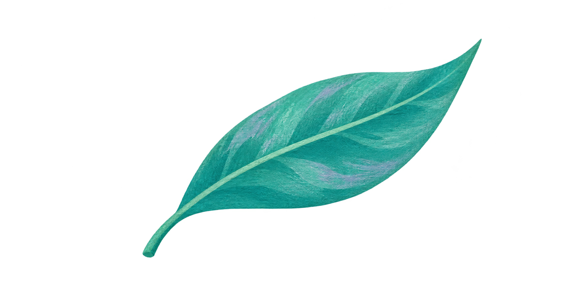
43 / 90 kitapta ilgili nesne grubu
90 V4 kitap metnine göre önceliklendirilmiş 20 ayrı görsel. Sayılar nesne grubunun metinlerde geçmesini gösterir; bu çizimin uygun olduğu kitap sayısı veya motorun seçilme olasılığı değildir. Genel nesne, belirli durumun yerine otomatik bağlanmaz.

43 / 90 kitapta ilgili nesne grubu
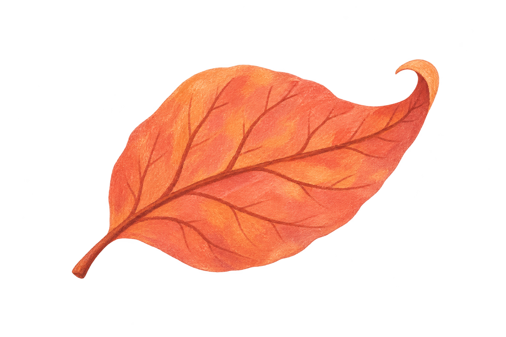
43 / 90 kitapta ilgili nesne grubu
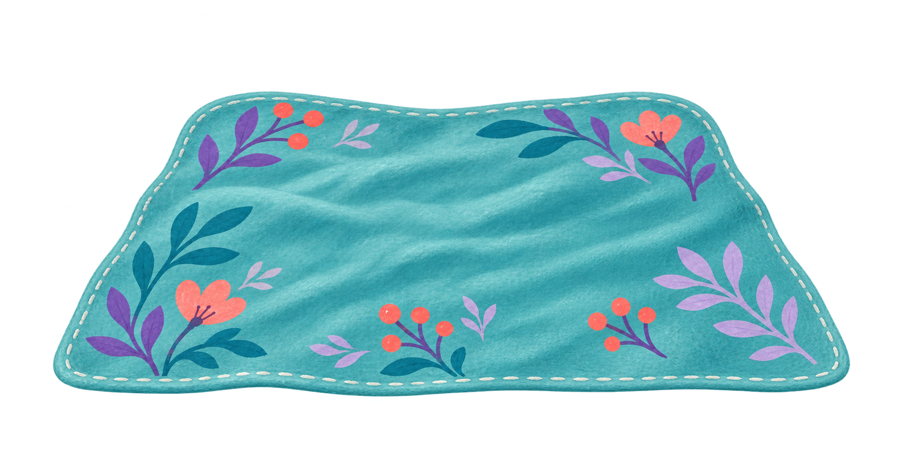
31 / 90 kitapta ilgili nesne grubu
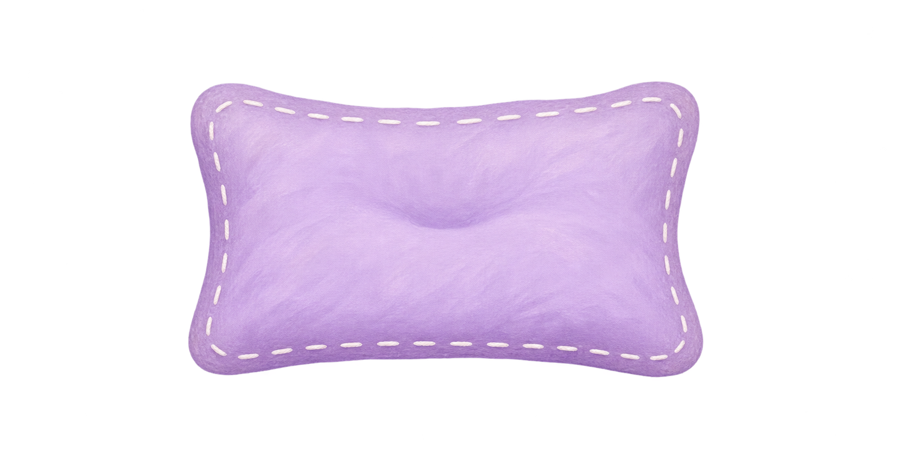
29 / 90 kitapta ilgili nesne grubu
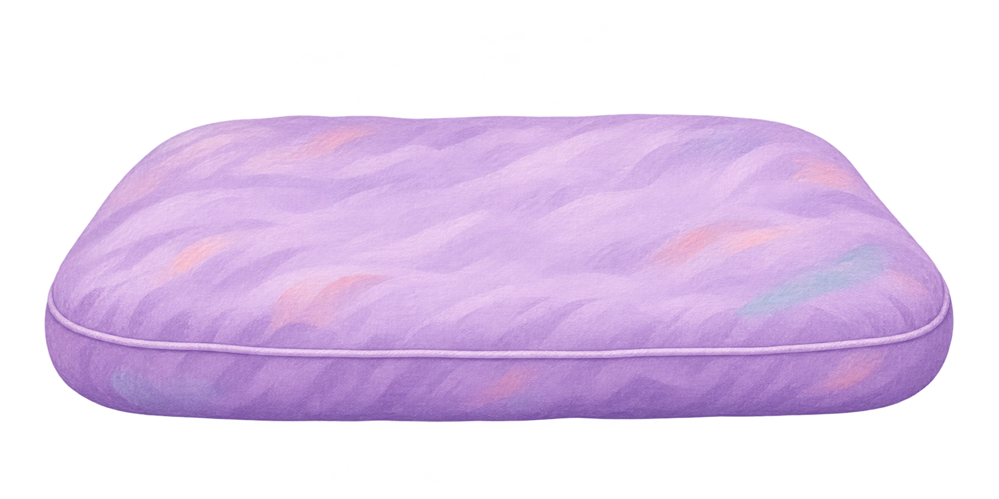
29 / 90 kitapta ilgili nesne grubu
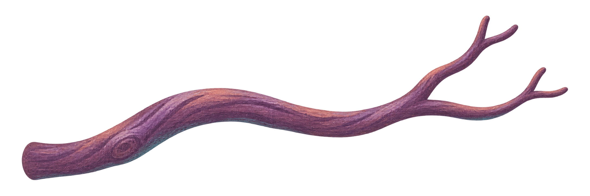
20 / 90 kitapta ilgili nesne grubu
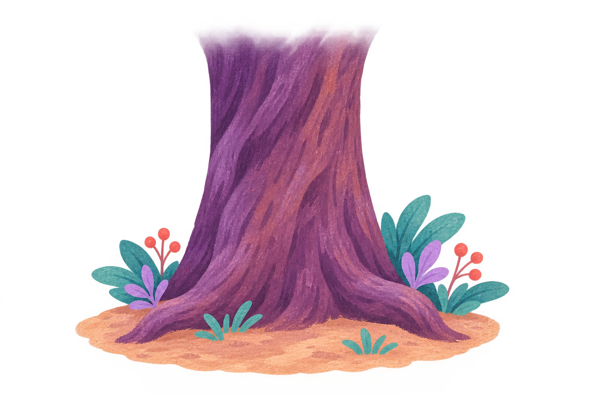
17 / 90 kitapta ilgili nesne grubu

18 / 90 kitapta ilgili nesne grubu
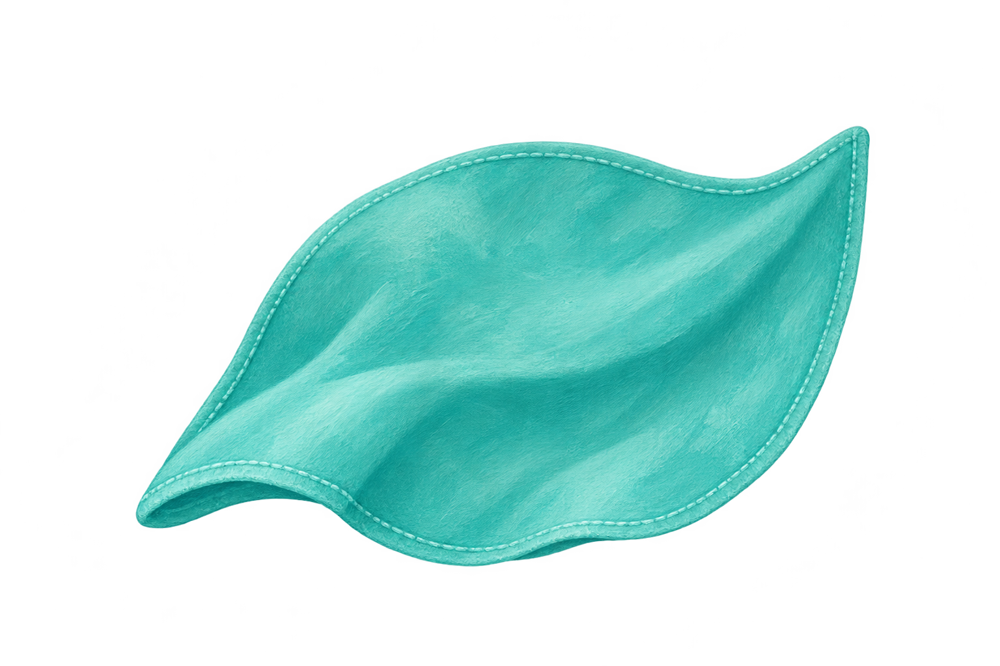
13 / 90 kitapta ilgili nesne grubu
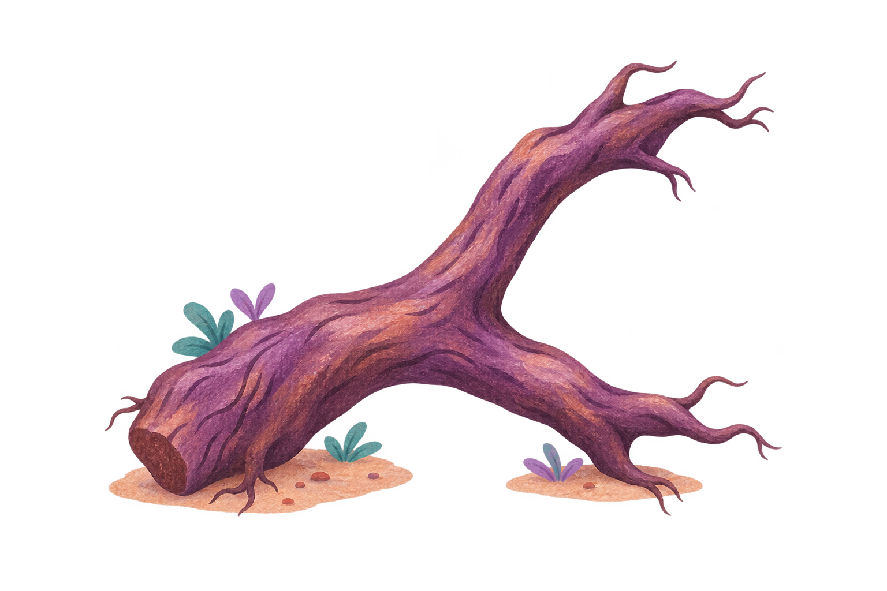
13 / 90 kitapta ilgili nesne grubu
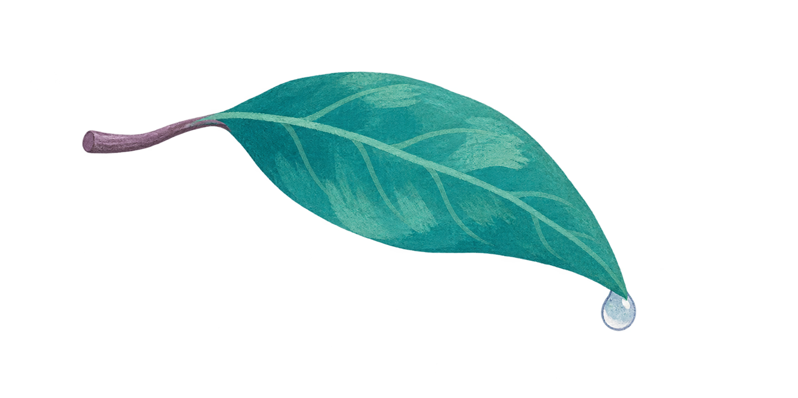
12 / 90 kitapta ilgili nesne grubu
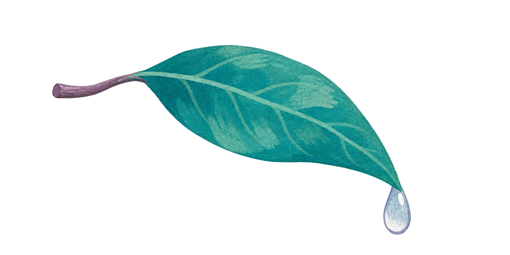
12 / 90 kitapta ilgili nesne grubu
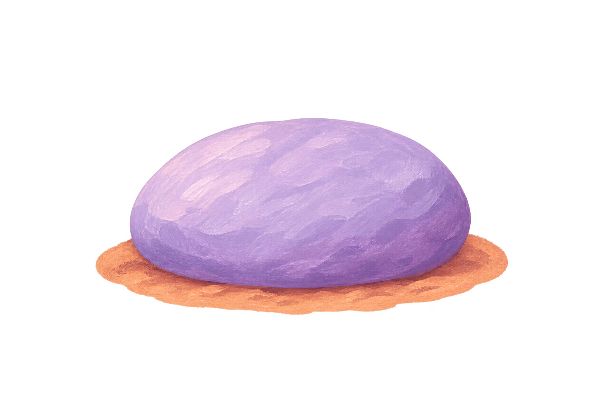
11 / 90 kitapta ilgili nesne grubu
9 / 90 kitapta ilgili nesne grubu
9 / 90 kitapta ilgili nesne grubu

43 / 90 kitapta ilgili nesne grubu

43 / 90 kitapta ilgili nesne grubu

43 / 90 kitapta ilgili nesne grubu

43 / 90 kitapta ilgili nesne grubu

Sahneye göre kullanılacak destek varlığı